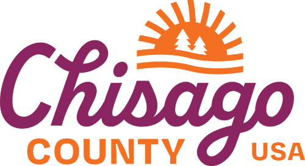
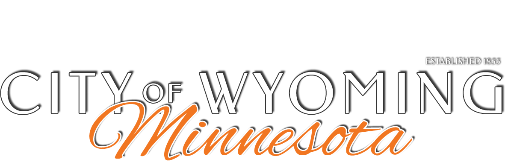

Wyoming Area Library is expanding access to our community. Join us as we officially launch Extended Access — giving cardholders more freedom, more hours, and more of what makes ECRL great.
The Event
This is a free, open-door event for the whole community. Stop by anytime between 4:30 and 6:00 PM to join the celebration, meet library staff, learn how Extended Access works, and be part of a milestone moment for Wyoming Area Library.
What Is It
Extended Access allows library cardholders to enter and use Wyoming Area Library during hours when staff are not present — giving you more flexibility and more time with the resources you love.
Extended Access allows patrons to use the library outside of staffed hours, providing more flexibility to visit on their own schedule. During this time, the building, study rooms, collections, and digital services remain available. However, staff are not on site, so assistance and in-person services are not provided.
The Extended Access program uses your library card to grant entry, similar to a 24-hour fitness center. To enter, scan the barcode on your card and enter your PIN. If your account is enabled for Extended Access and the correct PIN is entered, the doors will unlock. This process is required at both entry points to the library.
If Extended Access is not enabled on your account or an incorrect PIN is entered, access will be denied. Barcode readers and PIN pads include on-screen prompts to guide you through the process.
Any ECRL cardholder in good standing who is 18 years of age or older can take the Extended Access training. Once you have completed Extended Access training you may take advantage of Extended Access.
[Placeholder quote from Carla Lydon about Extended Access and how it supports the community.]
Questions & Answers
Everything you need to know about Extended Access at the Wyoming Area Giese Memorial Library.
Extended Access allows patrons to use the library outside of staffed hours, providing more flexibility to visit on their own schedule. During this time, the building remains locked and only patrons with Extended Access privileges can unlock the doors. The library is limited to Extended Access patrons, their guests, and authorized service staff performing cleaning or maintenance.
While the building, study rooms, collections, and digital services remain available, support staff are not on site, so assistance and in-person services are not provided.
Signing up for Extended Access is easy. Attend a brief training at our launch event on May 4, 2026, or ask a staff member at the Wyoming Area Library during regular staffed hours.
Trainings are quick and can often be completed on the spot.
Extended Access is available from 6 AM until the library opens for staffed hours, and again from closing until 10 PM. On days when the library is not open for staffed hours, Extended Access is available from 6 AM to 10 PM.
Patrons in the library during staffed hours must exit the building at closing time. Those with Extended Access may re-enter using their library card to continue their visit.
There is no cost to participate in the Extended Access program. To be eligible, patrons must be at least 18 years old, have a valid ECRL library card, maintain an account balance below $20.00, and complete Extended Access training.
During Extended Access hours, you may use the library much as you would during staffed hours. This includes browsing and checking out materials, picking up holds from the hold shelf, using public computers and Wi-Fi, accessing digital resources, printing, using study rooms, and accessing the public restrooms inside the building.
Please note that while most spaces and services are available, support staff are not on site, so assistance and in-person services are not provided.
The entry system uses your library card barcode and PIN to verify access. When you scan your card, the system checks your account through the library system to confirm your PIN is correct, your account is eligible for Extended Access, and your account balance is below $20.00.
If approved, the exterior door unlocks and you may enter the lobby. You will repeat the same process to enter the main library space. Separate access control points allow access to public areas like restrooms while ensuring only authorized patrons can enter the library space when staff are not on site.
Patrons with Extended Access privileges may bring guests and children. All guests must follow the same rules and policies as the patron, and children must be supervised at all times.
Guests may not remain in the library after the sponsoring patron leaves. If a guest also has Extended Access privileges, they must enter the library using their own card and PIN to stay beyond that time.
During Extended Access hours, support staff are not on site, so assistance with library services is not available. If you need help with materials, technology, or your account, please visit during staffed hours.
For health or safety concerns, please call 911 in an emergency. For non-emergency situations, follow posted instructions in the building or contact local authorities as appropriate.
Stay In the Loop
Click Remind Me to open a Microsoft Form in a new tab. Complete the form to sign up for a reminder before the May 4th public launch party at Wyoming Area Library.
Email addresses will be used only to send a reminder about this event and will be stored securely by a third-party service until they are deleted after the event.
Location
Wyoming Area Library is conveniently located on Forest Boulevard with easy parking and accessible entrance on the north side of the library.
Giese Memorial Library
East Central Regional Library
Thank you
Extended Access at Wyoming Area Library is made possible with vital funding and support from Chisago County and the City of Wyoming, Minnesota. We are grateful for their partnership.

Chisago County, Minnesota
Thank you for your continued support.

City of Wyoming, Minnesota
Thank you for your continued support.